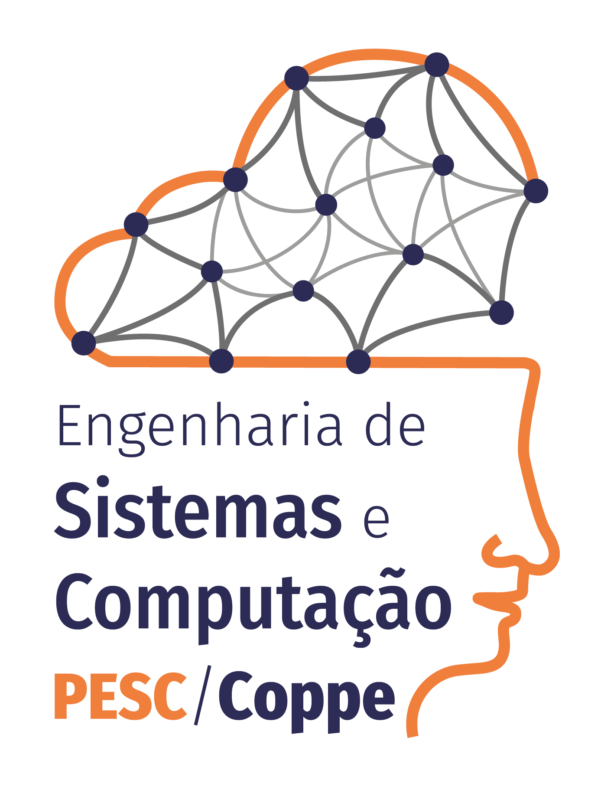
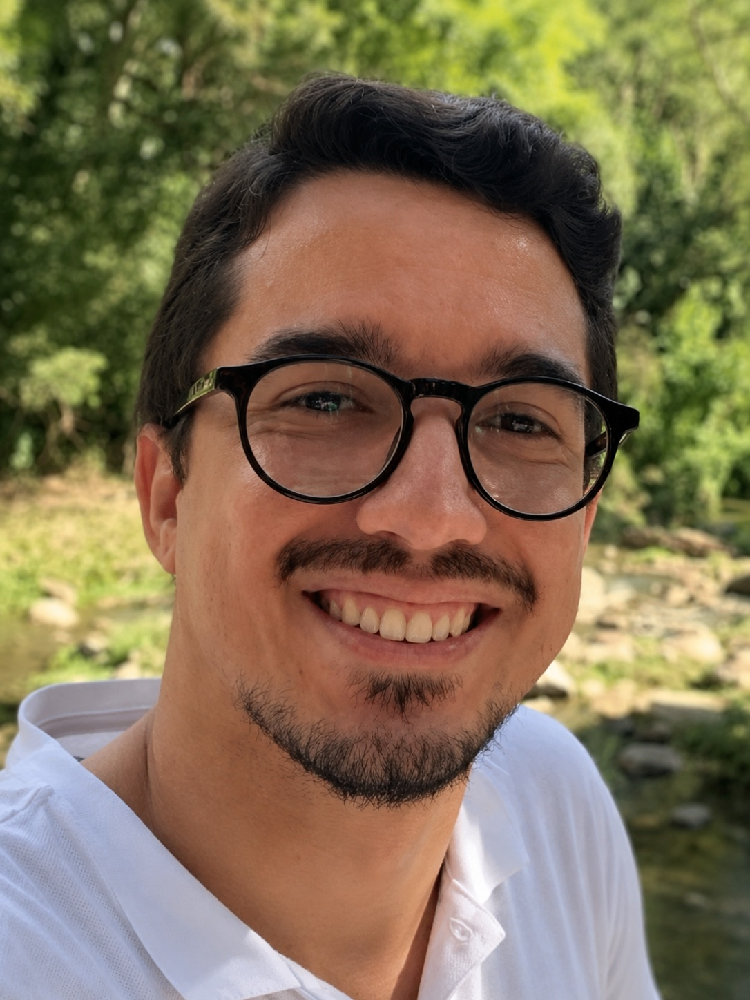

|
 |
Heleno de Souza Campos Junior (a.k.a. Heleno Campos) Assistant Professor, PESC/COPPE/UFRJ Postdoctoral Researcher, IC/UFF D.Sc., IC/UFF, 2025 M.Sc., PGCC/UFJF, 2018 B.Sc., Campus Juiz de Fora/IF Sudeste MG, 2016 |
 |
| Ygor Wesley Soares Moreira Lima 2025 (co-advisor) Mestrado em Computação (UFF) |
| Pedro Trinkenreich Henrique 2025 (co-advisor) Bacharelado em Ciência da Computação (UFF) |